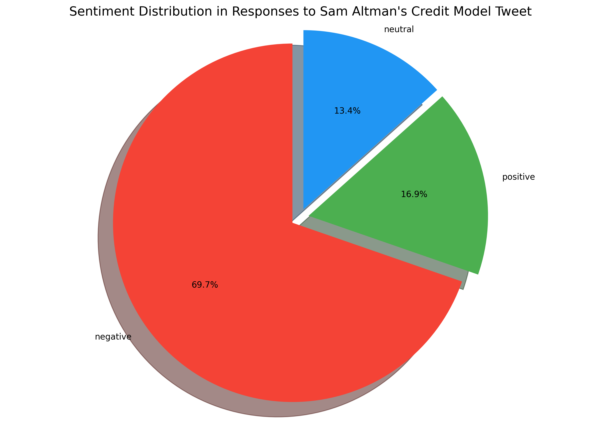
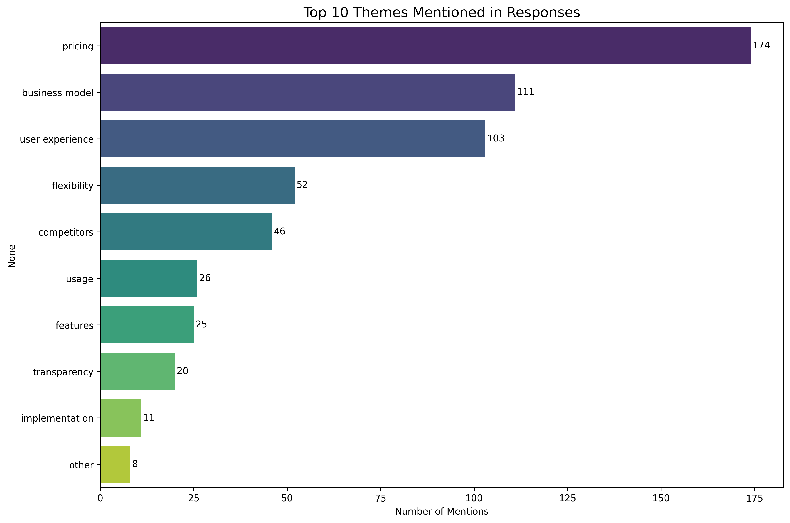

Before jumping into a pricing experiment, I wanted to understand how users felt about transitioning to a credit-based model.
For this I analyzed the top 250 comments on Sam Altman's tweet and grouped them into sentiment categories:

Roughly 70% were negative, 17% positive, and 13% neutral - indicating overall skepticism toward the idea of credits. Following were the issues:

Pricing and business model here reflect an overall psychological dislike towards a credit based pricing model. Below are some of the tweets that highlight this:
"Every platform I have used that does this, I unsubscribe. This will hurt daily users pockets"
"Consumers will find metering confusing. There will be different prices, and people don't understand why."
"I, like any sane individual, utterly despise credit systems. It is introducing a new unknown. At least with a monthly sub - I know my cash flow."
But 30% of the tweets also had suggestions:
"Offer unlimited access to base features, limited access to advanced features, and pay-per-use option for advanced features with cost estimates shown in advance."
"Keep current $20/month limits, but allow users to top up another $20 to extend usage across all features. Use cost ratios for each feature behind the scenes to balance usage."
"Use top-ups instead of credits"
"Use an add-on subscription model instead, with unlimited access to specific features for an additional monthly fee, while maintaining basic access to all features."
"Keep the current system the same and add an option to purchase additional usage limits."
TAKEAWAYS:
-
•
By pairing user sentiments with the hard data on margins and costs, we can craft pricing experiments that address user anxieties while still capturing incremental revenue from power users.
-
•
We should keep track of user sentiments across platforms like Reddit and X. This feedback loop helps ensure the final solution is both financially sound and user-loved. Given a frequent concern around competitive offerings, it is also important to keep a close track of how players like Grok and Anthropic respond.